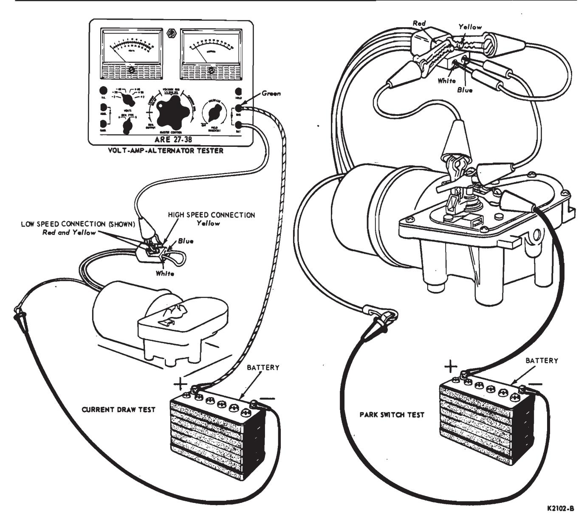
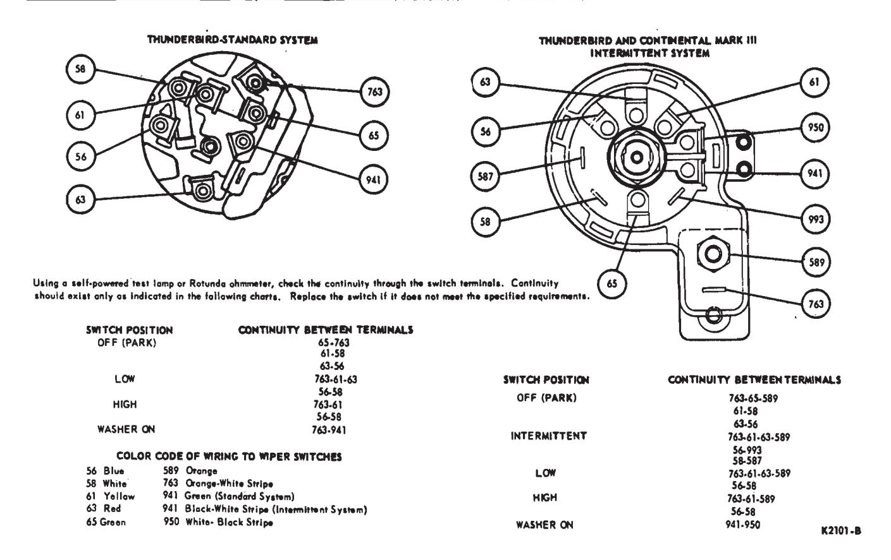
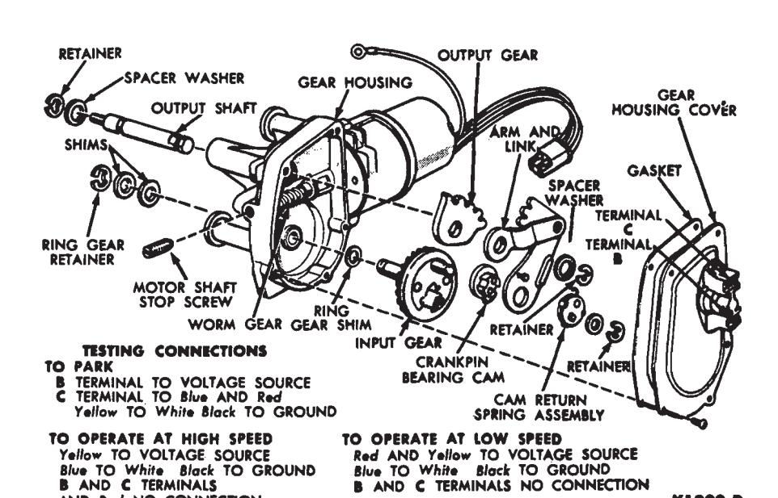

Windshield Wipers and Washers · 35-07-01b
The system is powered by a twospeed, oscillating type, electric motor which is mounted on the cowl panel. The drive link and pivot plate assembly has two integral links and is bolted to the right side of the cowl panel. One of the links connects to the motor crank pin; the other connects to the right pivot shaft assembly. A third link, integral with the left pivot shaft assembly, also connects to the right pivot shaft.
Motor Current Draw Test
Remove the motor from the vehicle as outlined in this section. Connect a jumper wire between the two female terminals (blue to white) in the connector plug, connect the motor ground wire to the battery negative post, and connect one of the tester leads to the battery positive post (Fig. 26). To check low speed current draw, connect the other tester lead to both male terminals (red and yellow) in the connector plug as shown. To check high speed current draw, remove the tester lead from the red terminal and connect it to the yellow terminal only. In either speed, the current draw should not exceed 3 amperes.
Motor Park Switch Test
Remove the motor from the vehicle as outlined in this section. Connect jumper wires between the park switch terminals and the connector plug, and between the motor and battery as shown in Fig. 26. If the motor moves to park position, it is OK. Check the manual control switch and all pertinent wiring for continuity. If the motor does not park, replace it.
Windshield Wiper Manual Control Switch Tests
Continuity Test
Check the continuity between terminals of the switch as shown in Fig. 27. (As an alternate procedure plug a known good switch into the wiring harness and operate). If the switch is good, check the continuity of the wires and repair or replace the wiring as necessary. If continuity does not exist between all the terminals as indicated, replace the switch.
Circuit Breaker Test
Turn the switch to OFF position and connect the variable resistance unit of a Rotunda Volt-Amp Tester as shown in Fig. 14. The Lincoln Continental switch is shown, but the Thunderbird and Continental Mark III switches are connected in the same manner, both using terminals 65 and 763. See Fig. 27 for terminal identification.
Set the master control to maximum resistance position initially to prevent damage to the circuitry and ammeter.
Low Current Pass Test
Adjust the variable resistance until the ammeter indicates 7 1/2 amperes. The ammeter should indicate the specified current for ten minutes. If the circuit will not indiciate specified current for ten minutes (current drops to zero), replace the switch.
High Current Pass Test
Adjust the master control until the ammeter indicates 15 amperes. The circuit should open within 30 seconds (current drops to zero); otherwise the switch must be replaced.
Wiper Motor Removal and Installation
Disconnect the battery ground cable. Disconnect the washer hose, remove three retaining bolts and pull the cowl top grille out from under two clips.
Disconnect the connector plug (2 plugs with intermittent wiper) from the wiring harness at the engine side of the dash panel. Push the wiring and plug(s) along with the grommet through the opening in the dash panel.
Remove the four motor-to-cowl retaining bolts. Lift the motor out and, at the same time, pull the wiper arm and blade assembly to the left for access to the motor crank pin clip. Remove the clip and disconnect the drive link from the motor crank pin. Remove three retaining bolts and separate the motor from the mounting plate and cover and wiring harness assembly. If the motor is being replaced, transfer the mounting plate and cover and harness assembly to the new motor.
Before mounting the motor to the cowl panel route the wiring harness through the opening in the dash panel and pull the grommet in place. When connecting the motor crank pin to the drive link be sure to force the connecting clip into locked position as shown in Fig. 21.

Fig. 26 — Windshield Wiper Motor Tests — Oscillating Type
Pivot Shaft and Link Assembly Removal and Installation
Disconnect the battery ground cable. Disconnect the washer hose, remove the three retaining bolts, and pull the cowl top grille out from under the two clips. Remove the wiper arm and blade assembly from the pivot shaft to be removed. See Section 1 of this part.
To remove the left pivot shaft, loosen the right pivot shaft retaining bolts, and remove the left pivot shaft retaining bolts. Remove the connecting clip and disconnect the left pivot shaft link from the right pivot shaft crank pin. Work the left pivot shaft and link assembly toward the right and out of the cowl opening.
To remove the right pivot shaft, remove the three retaining bolts, and disconnect the linkage from the crank pin by removing the clip. Lift the pivot shaft assembly from the cowl.
When installing the pivot shaft assemblies, tighten the retaining bolts to 3-7 ft-lbs torque. When connecting the links to the right pivot shaft assembly, connect first the drive link and then the left pivot shaft link to the crank pin on the right pivot shaft assembly. Secure the links by installing the retaining clip. Be sure that the clips are forced into locked position as shown in Fig. 21.
Windshield Wiper Switch Removal and Installation
-
Disconnect the battery ground cable.
-
Remove five screws retaining the upper edge of the instrument cluster pad and retainer assembly to the instrument panel pad, and remove the pad and retainer assembly from the face of the instrument cluster.
-
Remove the three screws retaining the rear vent and wiper control pod, and pull the pod from the instrument panel. Unplug the electrical connector, and remove the illumination bulbs.
-
Remove the control knobs. Remove the two screws retaining the windshield wiper switch and remove the switch.

Fig. 27 — Wiper Switch Continuity Test Connections — Thunderbird and Continental Mark III
Fig. 28 — Two-Speed Wiper Motor — Oscillating Type -
Position the new switch to the control pod assembly and install the two retaining screws. Install the control knobs.
-
Plug in the electrical connector, and install the illumination bulbs.
-
Position the control assembly to the instrument panel and install the three retaining screws.
-
Install the instrument cluster pad and retainer assembly.
-
Connect the battery ground cable.
Wiper Motor Overhaul
Disassembly
The two-speed electric motor may be disassembled for service of the drive mechanism parts.
-
Remove the gear housing cover plate and gasket (Fig. 28).
-
Remove the output shaft retainer and spacer washer.
-
Remove the crankpin bearing retainer and remove the spacer washer and cam return spring assembly.
-
Remove the arm and link assembly.
-
Remove the crankpin bearing cam.
-
Remove the input gear retainer and outer spacer shim, and remove the input gear and inner spacer shim.
-
Remove the wiper arm lever nut and lock washer.
-
Remove the wiper arm lever and spacer, and remove the output shaft and gear assembly from the housing.
-
The output gear may be removed from its shaft by tapping with a fiber hammer. Be careful not to damage the end of the shaft.
The worm drive gear and armature assembly is not serviced.
Cleaning and Inspection
- Clean the gear housing of all old grease. Do not allow any cleaning fluid to contact the armature shaft and output shaft bearings.
- Wipe all other parts with a clean cloth.
- Inspect the gear housing for cracks or distortion. Replace a cracked or distorted housing.
- Check all shafts, bushings, and gears for scored surfaces. Replace damaged parts.
Assembly
-
Tighten the motor cover. Adjust the motor shaft end play to 0.000-0.005 inch by turning the shaft stop screw. Measure with a feeler gauge between the stop screw and the motor shaft.
-
Install the input gear shim on the input gear shaft and install the gear in the housing. Adjust the end play to 0.005 to 0.010 inch by adding or removing shims under the input gear retainer. Install the retainer.
-
Install the output gear on the output shaft. Make sure that the gear is bottomed on the shaft.
-
Install the output shaft and gear assembly into the housing with the gear teeth facing the motor. Install one spacer washer to the outside end of the output shaft and assemble the wiper arm lever to the output shaft, with the linkage studs facing away from and above the shaft. Secure the lever with a lock washer and nut.
-
Place the bearing cam on the crankpin with the small diameter portion of the cam facing outward.
-
Install the arm and link assembly to the bearing cam. As the arm is placed on the shaft, the gears must be meshed and the link which is riveted to the arm must be installed to the output shaft at the same time. Proper gear indexing is obtained when the bottom tooth of the arm and gear segment will be in mesh with the bottom valley of the output shaft gear.
-
Install the output shaft spacer washer and retainer. Check the end play of the output shaft (0.005-0.010 inch). Remove or install spacer washers under the shaft retainer to adjust the end play.
-
Install the cam return spring assembly.
-
Install the bearing spacer and retainer. If the retainer cannot be installed, one or more coils of the spring clutch are probably out of place. If the bearing has excessive end play on the crankpin, the projection of the bearing may ride out of the semi-circular slot in the end plate. Add spacer washers under the retainer if necessary.
-
Apply generous amounts of Sun Prestige grease to all moving parts. Install the gear housing cover plate.
When operating the unit on the bench, do not place hands or fingers between the wiper lever and the case, or inside the gear housing, as considerable power is developed by the gear reduction.